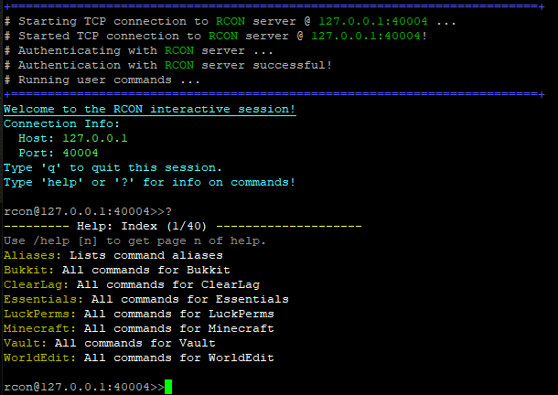
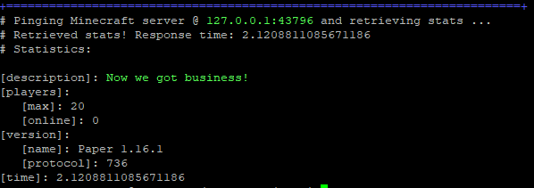

mcli usage¶
Introduction¶
‘mcli.py’ is a command line application that provides a front end for the mctools library. mcli supports all operations offered by mctools in a simple, robust manner.
General Usage¶
This section defines general usage for mcli.py
Note
From this point onwards, we reference mcli.py as mcli, which is how you would call the command if you installed via pip or setuptools.
However, if you downloaded the source code or the source distribution without installing, the you will call mcli as a python file:
python3 mcli.py [arguments]
General Arguments¶
- usage: mcli.py [-h] [-o PATH] [-oc | -or] [-nc] [-r] [-t TIMEOUT] [-ri REQID]
[-q] host {rcon,query,ping}
Shows the help menu:
-h, –help
Disables color output, and removes format characters from the server output:
-nc, –no-color
Shows format characters, does not replace or remove them:
-r, –raw
Sets a timeout value for socket operations in seconds(default value is 60):
-t [TIMEOUT], –timeout [TIMEOUT]
Sets a custom request ID, instead of generating one:
-ri [REQID], –reqid [REQID]
Quiet mode, will not output anything to the terminal:
-q, –quiet
Output Options¶
This section defines arguments for outputting server responses to a external file.
Saves the output to a file in JSON format (only saves relevant content, such as server responses and errors):
-o [PATH], –output [PATH]
Replaces format characters with ascii color codes in the output file. Default action is to remove them:
-oc, –output-color
Leaves formatting characters when outputting to a file. Default action is to remove them:
-or, –output-raw
Hostname¶
After you have specified your optional arguments, you must provide a hostname to connect to. A hostname can be a domain name or IP address, anything that your computer can resolve.
If you need to use a custom port, you can specify it using the ‘:’ character after the hostname. If no port number is specified, then the default port number for the connection you selected will be used.
For example, let’s say you wanted to connect to ‘mc.server.net’ on port 12345:
mcli mc.server.net:12345 [...]
This will set the port number to 12345.
Specifying a Connection type¶
After you have specified your optional arguments and hostname, you must specify a connection type. You may choose from the following:
rcon
query
ping
Each connection type has specific arguments, which we will be going into. For now, an example:
mcli mc.server.net rcon [...]
This will start a RCON connection to ‘mc.server.net’.
RCON Usage¶
Setting ‘rcon’ as the connection type will start a RCON connection to the server. The following arguments are available for RCON:
Send a command to the RCON server. Can specify multiple:
-c [COMMAND], –command [COMMAND]
Starts an interactive session with the RCON server:
-i, –interactive
After you have specified your optional parameters, you must provide a password. This is a required field.
mcli [OPTIONAL ARGUMENTS] mc.server.net rcon [OPTIONAL ARGUMENTS] [PASSWORD]
For example, let’s say you wanted to start an interactive RCON session with ‘mc.server.net’ with the password ‘Minecraft is Cool!’:
mcli mc.server.net rcon --interactive 'Minecraft is Cool!'
This will create an interactive RCON session with ‘mc.server.net’.
QUERY Usage¶
Setting ‘query’ as the connection type will start a QUERY connection to the server. The following arguments are available for QUERY:
Retrieve full stats(mcli retrieves basic stats by default):
-fs, –full-stats
For example, lets say you wanted to retrieve full Query statistics from ‘mc.server.net’ on port 1234:
mcli mc.server.net:1234 query -fs
PING Usage¶
Setting ‘ping’ as the connection type will start a PING connection to the server. The following arguments are available for PING:
Output favicon data to the terminal(mcli does not output favicon data by default):
-sf, –show-favicon
Use a custom protocol number:
-p PROTOCOL_NUMBER
For example, lets say you wanted to ping ‘mc.server.net’, but pretend to be Minecraft version 1.13:
mcli mc.server.net ping -p 393
Examples¶
Below are some usage examples for mcli:
Ping server and get basic stats:
mcli [hostname] ping
Backup and stop a Minecraft server via RCON:
mcli [hostname] rcon --command backup --command stop [password]
Message player ‘ILoveCraft’ on ‘mc.server.net’ with password ‘craft’:
mcli mc.server.net rcon --command 'msg ILoveCraft Minecraft loves you too!' craft
Start an interactive RCON session with ‘mc.example.com’ on port 858585, with test as the password:
mcli mc.example.com:858585 rcon --interactive test
Get full stats via Query and output the result to ‘query.txt’:
mcli -o query.txt [hostanme] query --full-stats
Get basic stats via query and disable color:
mcli --no-color [hostname] query
Ping server, but leave format chars:
mcli --raw [hostname] ping
Screenshots¶
Here are some screenshots of mcli in action:
RCON Usage¶
Interactive RCON session

Ping usage¶
Pinging Minecraft server and fetching statistics
Conclusion¶
You should now have a basic understanding of the ‘mcli.py’ frontend and how to use it. After you install mctools through pip(or some other method), then the ‘mcli’ command should be available.